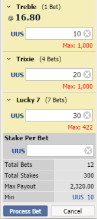
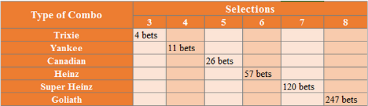
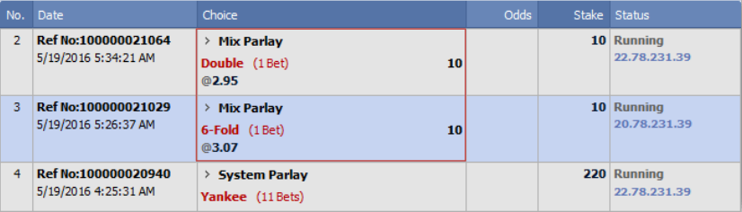
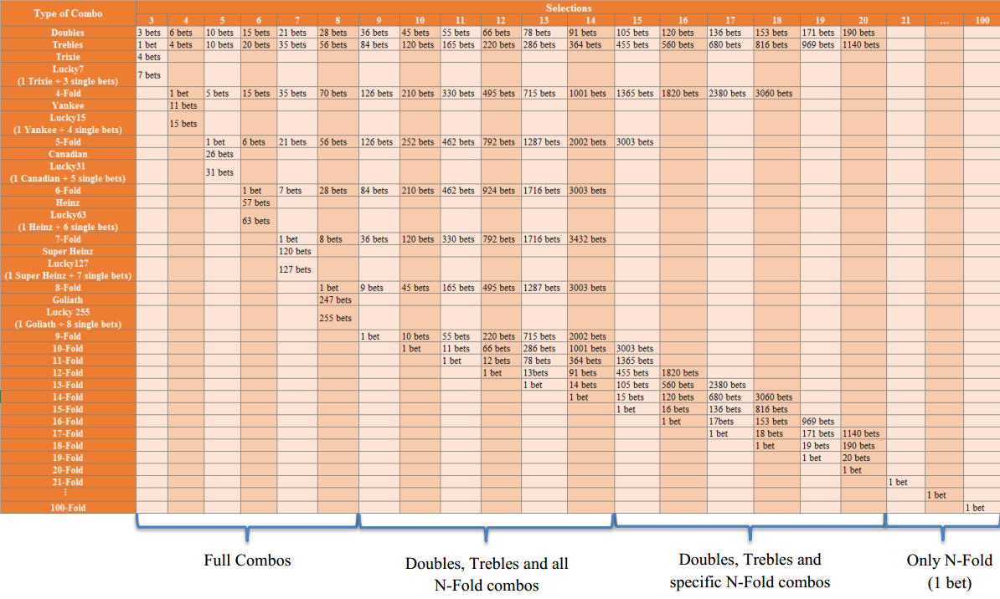
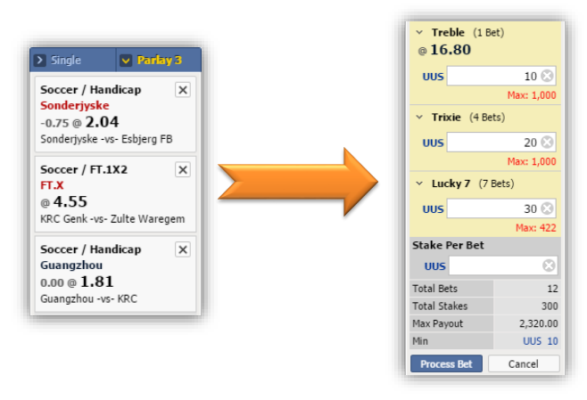
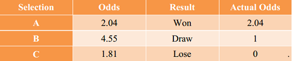
Net Win Loss A = Win Loss A – Stake A = 204 – 100 = 104 > 0
→ Sub-ticket A is Won.
Net Win Loss B = Win Loss B – Stake B = 100 – 100 = 0
→ Sub-ticket B is Draw.
Net Win Loss C = Win Loss C – Stake C = 0 – 100 = – 100 < 0
→ Sub-ticket C is Lose.
Net Win Loss Trixie = Win Loss Trixie – Stake Trixie = 204 – 400 = – 196 < 0
→ Sub-ticket Trixie is Lose
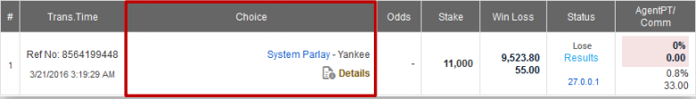
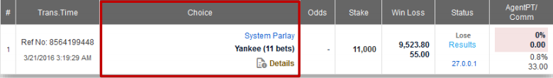
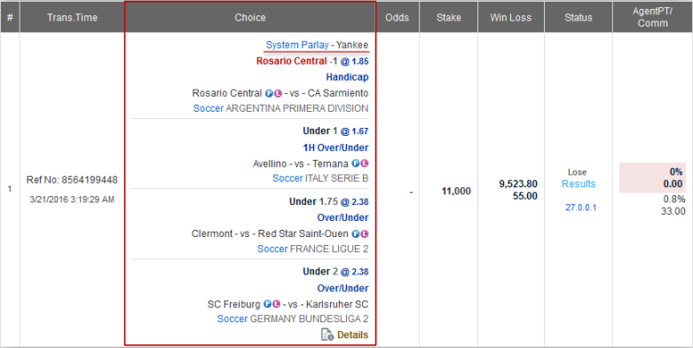
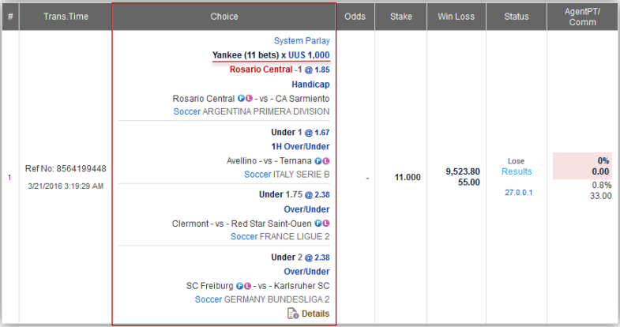
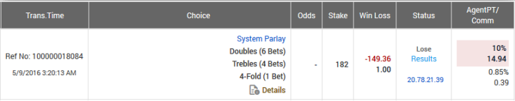
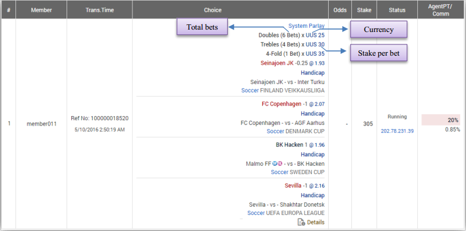